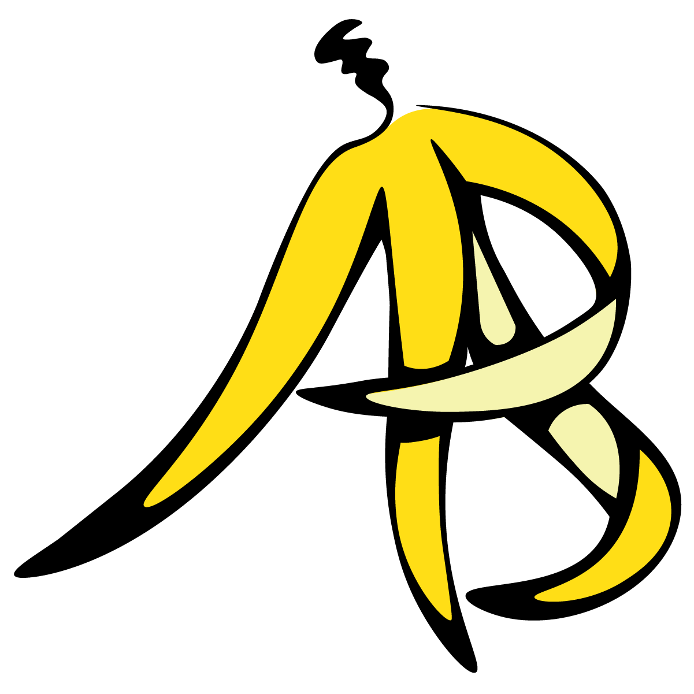

Hi I'm Anna!
I’m a UX/UI designer passionate about creating thoughtful solutions with modern aesthetics

Figure It Out App
Original mobile app for artists and other creatives which features figure drawing resources like an extensive model library, art history references, and master classes
NARF Responsive Redesign
Native American Rights Fund website redesign across mobile, tablet, and desktop platforms. Redesign aimed to increase donations and inform users